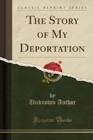
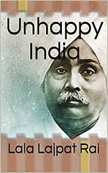
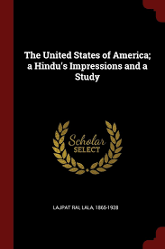

Books and Biographies written by Lala Lajpat Rai :-
Along with founding Arya Gazaette as its editor, he regularly contributed to several major Hindi,
Punjabi, English and Urdu newspapers and magazines. He also authored the following published books.
- The Story of My Deportation, 1908
- Arya Samaj, 1915
- The United States of America: A Hindu’s Impression, 1916
- The problem of National Education in India, 1920
- Unhappy India, 1928
- England's Debt to India, 1917
- Autobiographical Writings
He wrote biographies of Mazzini, Garibaldi,Shivaji,and Shrikrishna.
-
Young India: An Interpretation and a History of the Nationalist Movement from Within. New
York: B.W. Huebsch, 1916. This book was written shortly after World War I broke out in
Europe. Lajpat Rai was traveling in the United States at the time of Franz Ferdinand's
assassination. Rai wrote the book to exclaim his people's desire to help the British,
who had been ruling in India since the mid-1700s, fight against the Germans. While the book
makes the Indian people sound good, saying that they were rushing in masses to volunteer for
war, one must take what Rai says with a grain of salt. Rai is trying to gain American
support in India against British colonialism, and the Indian people would look bad in the
American public's, as well as government's, eyes if they were not willing to fight for the
greater good, even on the side of Britain. Rai also makes the point to emphasize that the
Indian people do not want to engage in a military conflict with Britain. In Young India,
Rai makes many parallels to the American fight for independence against the British, such as
their common enemy (the British), their wish for self-sovereignty, and the right to bear arms
as an independent nation. Rai uses Young India to convey his idea of an independent India,
free from the viceroys and rule of the English Parliament. Rai wishes to have complete
sovereignty from all foreign rule, but he needs to gain the support of America, his only true
hope for an ally against Britain. Young India gives a first-hand account of one of the primary
freedom fighters in India in the early 1900s. Rai was one of the most well-known leaders of
the Nationalist, as well as Independence, Movement in India. By writing an account outlining
the history of India, showing that the Indian people are better than the stereotype given by
the West, willing and able to govern themselves, and attempting to gain American support
against the Colonial British, Rai allows his readers to understand what is actually happening
in India and why India should become an independent nation.
- The Collected Works of Lala Lajpat Rai, Volume 1 to Volume 15, edited by B.R. Nanda


